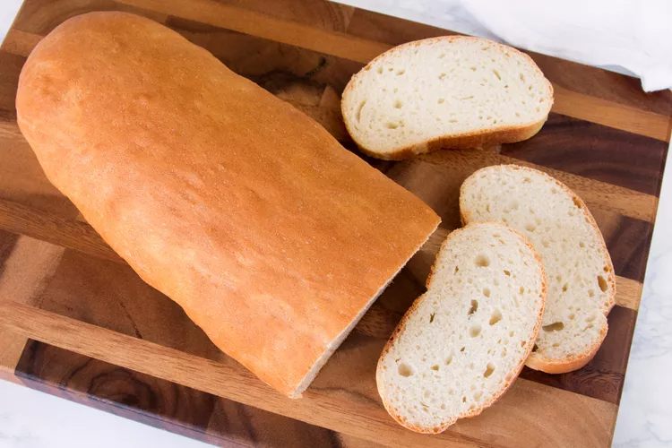

Pan Sobao Recipe

Puerto Rican pan sobao is a pillowy-soft, chewy, and semi-sweet bread with a soft crust, and it's utterly delicious.
Pan sobao translates to "kneaded" or "rubbed" bread and is sometimes called pan de manteca ("lard bread"),
which is appropriate because lard is the key ingredient. After you taste this sumptuous bread,
you'll discover why it's so well-loved and rarely lasts long. It's famously enjoyed from Puerto Rican bakeries,
but an easy bread anyone—even beginners—can make at home. It may even become your family's new go-to white bread.
Ingredients
- 3/4 cup (170 milliliters) warm water (105 F to 115 F)
- 1 (0.25-ounce) packet active dry yeast (2 1/4 teaspoons)
- 1 1/2 tablespoons (12 grams) white granulated sugar
- 2 tablespoons (25 grams) lard, or vegetable shortening
- 2 1/2 cups (300 grams) bread flour, divided
- 3/4 teaspoon (4 grams) kosher salt
- Cooking spray, for greasing bowl
Steps
- Gather the ingredients.
- In a medium mixing bowl, add the warm water and stir in the yeast and sugar until completely dissolved.
Let it stand for 15 minutes to allow the yeast to bloom.
- Mix in the lard, or shortening, then about 1 cup of bread flour and the kosher salt.
Add more bread flour—about 1/4 cup at a time—until the dough begins to follow mixing spoon around the bowl.
- Turn the dough out onto a lightly floured board. Knead for 10 minutes, adding bread flour in small amounts as needed when it becomes sticky.
(You may not use all of the flour.) The dough should be elastic and smooth.
- Place the ball of dough in a lightly greased bowl and flip it over so both sides are greased. Cover with a lint-free kitchen towel and let rise for 45 minutes,
or until double in size.
- Punch down the dough. Turn it out onto a very lightly floured board and form it into a ball.
Cover and let it rest for 5 minutes.
- Gently knead the dough for about 1 minute, dusting it lightly with flour as needed to prevent sticking. Form the dough into a ball,
cover with a towel and let rest for 15 minutes.
- Roll the dough back and forth under your palms to shape the ball into a long baguette, about 12 inches long. As you roll,
work from the middle to the ends so the loaf is a relatively even thickness.
- Place the loaf on a parchment paper-lined baking sheet. Cover with a towel,
and let rise for 30 minutes, or until double in size.
- Preheat the oven to 400 F. When it's done proofing, place the bread on the oven's middle rack and bake for 25 to 30 minutes,
until the top is golden brown and the bread sounds hollow when tapped underneath.
- Let the bread rest for a few minutes on the baking sheet,
then transfer to a baking rack to cool completely before slicing.